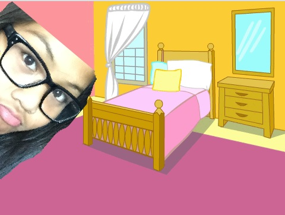
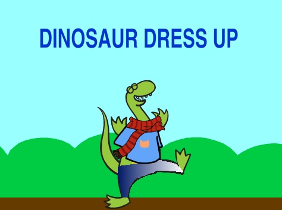

My Introduction Video
 This is the introduction video to my website.
It is an anmiated video of my self on a website called "Scratch."
A Dinosaur Dressup Game
 By: Victoria Shin and Janelle Viste
We were challenge to create a Scratch Project that intergrated art.
Victoria and I decided to make a styling game!
Check out our backlog.
Levels of Life Review Guide
By: Tristan Beuman and Janelle Viste
Check out our flowchart!
Trump & Clinton Quotes Matching Game
By: Cayla Wroth and Janelle Viste
This is a matching game in which the player test their knowlegde on the 2016 presidential candiates: Trump and Clinton.
This was a collabaration between Cayala Wroth and I.
NFL Concussions

By: Jumhelle Viduya and Janelle Viste
Visualizations between concussions and possible causes.
Check out our backlog.
Machiavelli's "The Prince" Simulation
By: Seth Chairez and Janelle Ciste
This is a simulation based off of Machiavelli's "The Prince"
See our reasoning,
backlog,
or presentation.